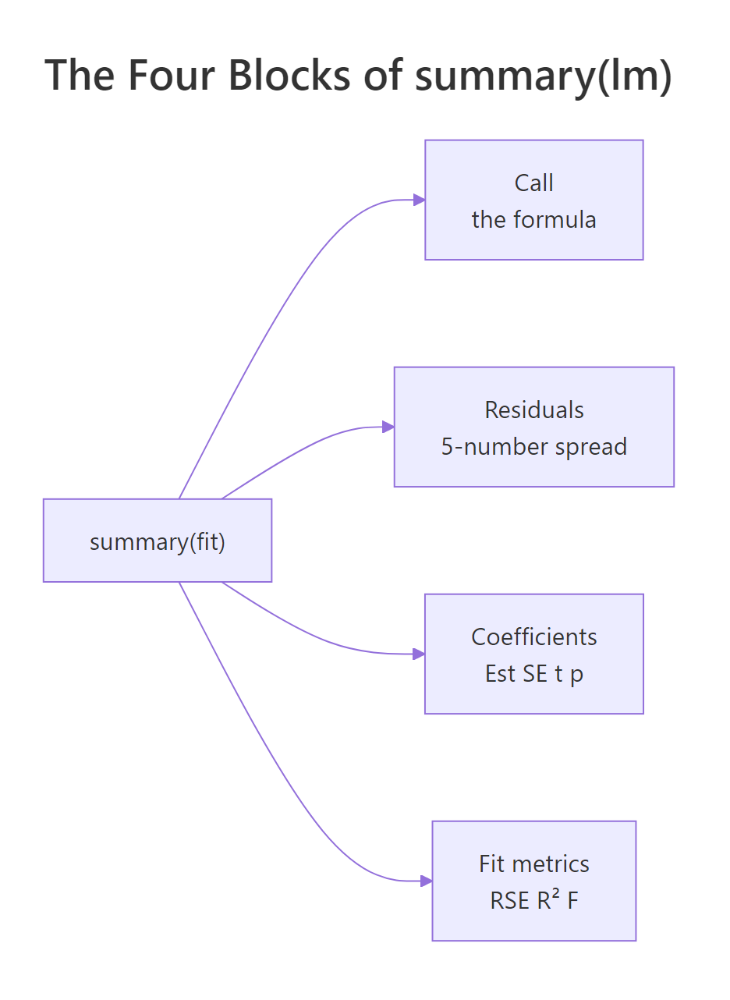
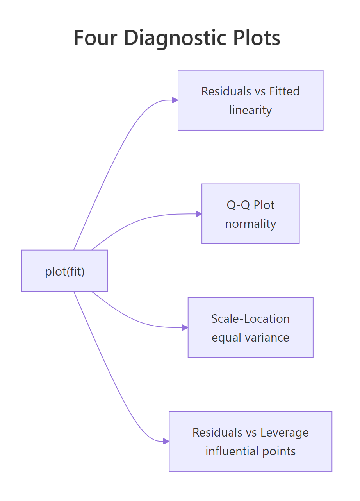
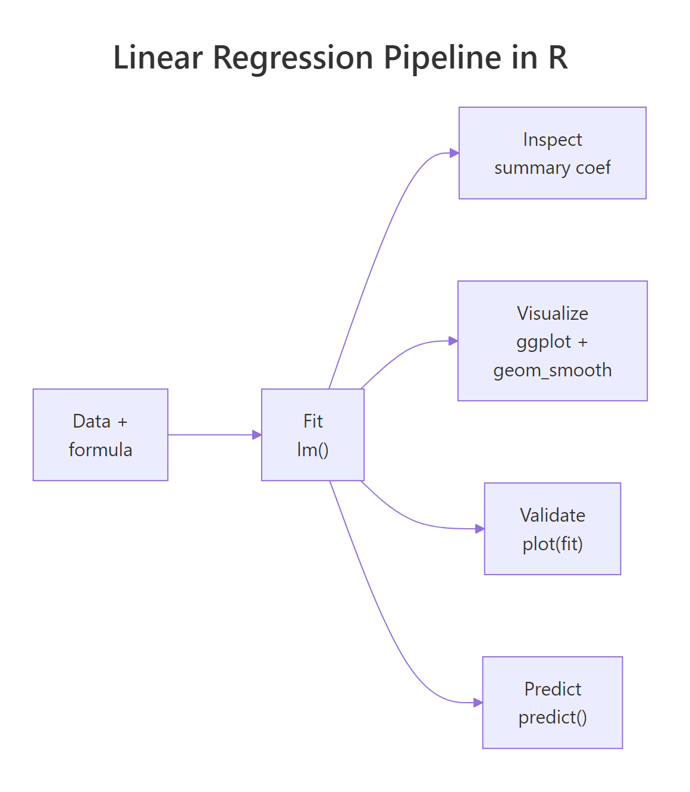

Linear Regression in R: Fit Your First Model With lm() and Understand Every Number
Linear regression in R fits the best straight line through your data using lm(y ~ x, data), and summary() tells you exactly how strong that relationship is. This tutorial walks through every line of the summary output on a real dataset: coefficients, R², F-statistic, residual standard error, and t-values, with the math behind each number explained from scratch.
What does lm() actually do?
When you call lm(y ~ x, data), R searches for the slope and intercept of the line that sits as close as possible to every point in your data. "Close" here means the sum of squared vertical distances from each point to the line is as small as possible. That single optimisation is everything lm() does. Every other number in summary() is bookkeeping that grades how good or bad that best line is.
The built-in cars dataset has 50 measurements of car speed (mph) and stopping distance (ft). We will model dist ~ speed and read the full output.
The slope speed = 3.9324 says that for every 1 mph faster, the stopping distance grows by about 3.9 ft on average. The intercept -17.58 is the predicted distance at 0 mph, which is meaningless on its own (you cannot drive at 0 and stop in negative feet) but is exactly what the line crosses on the y-axis. The R² of 0.65 says speed explains 65% of the variance in stopping distance. The rest of this post explains where each of those numbers came from.
A quick scatter plot makes the fit visible. We add the regression line with abline(), which knows how to draw a fitted lm object directly.
The line slopes upward and passes through the cloud of points. Some points sit close to the line; others sit far away. Those vertical gaps are the residuals, and they drive almost every other number in the summary.
lm() does one thing: it minimises the sum of squared residuals. Every other quantity in summary(), R², t-values, p-values, F-statistic, residual SE, is computed from the residuals and the fitted coefficients after that optimisation is done.Try it: Fit a simple linear regression of Petal.Length on Sepal.Length from the built-in iris dataset. Read off the slope from coef() and round it to 2 decimals.
Click to reveal solution
Explanation: coef() returns the named vector of coefficients; index [2] picks the slope (the intercept is index 1). Each extra cm of sepal length is associated with about 1.86 cm more petal length.
How do you read the coefficient table?
The coefficient block is the heart of the summary. Each row is one coefficient (intercept, slope), and the four columns answer four different questions: what is the estimate, how uncertain is it, how many standard errors away from zero is it, and how surprising would that be if the true value were zero.
The relationships between those columns are not magic. The t-value is exactly Estimate / Std. Error, and the p-value is the two-tailed area under a t-distribution with $n - 2$ degrees of freedom (50 − 2 = 48 here). We can verify both by hand.
The hand-computed t-value matches the table's 9.464 to four decimals, and the p-value matches 1.49e-12 exactly. So the rule is: a coefficient is "9.46 standard errors away from zero", which is so unlikely under the null hypothesis (true slope = 0) that the probability of seeing it by chance is roughly one in a trillion.

Figure 1: The four blocks of summary(lm(...)) and what each one answers.
*** simply means p < 0.001. Always report the actual p-value alongside the estimate and a confidence interval. Stars hide the difference between p = 0.0009 and p = 1e-12, even though the second is a vastly stronger signal.Try it: The (Intercept) row of coefs lists Estimate −17.5791 and Std. Error 6.7584. Compute its t-value by hand and store it in ex_t.
Click to reveal solution
Explanation: The same Estimate / Std. Error rule applies to every coefficient row, including the intercept. The negative sign just reflects that the estimate sits below zero.
What do residuals and residual standard error tell you?
A residual is the gap between an observed value and what the model predicted: $e_i = y_i - \hat{y}_i$. The five-number summary at the top of summary() (Min, 1Q, Median, 3Q, Max) is just a five-number description of these gaps. If the median is far from zero or the tails are wildly asymmetric, the line is missing something systematic.
The Residual Standard Error (RSE) is the typical size of one residual, in the units of y. Its formula divides the sum of squared residuals by $n - 2$ (because we estimated 2 parameters: intercept and slope) and then takes a square root.
$$\text{RSE} = \sqrt{\frac{\sum_{i=1}^{n}(y_i - \hat{y}_i)^2}{n - 2}}$$
We can compute it directly and check.
The hand-computed RSE matches summary(model)$sigma exactly: 15.38 ft. That means a typical prediction from this model is off by about 15 ft of stopping distance. Whether that is "good" depends on your context: if average stopping distance is around 43 ft, an error of 15 ft is one third of the response, which is large. RSE is the most concrete way to talk about model error in real-world units.
Try it: A property of OLS regression with an intercept is that the residuals always sum to (essentially) zero. Compute mean(residuals(model)) and see if it is near zero.
Click to reveal solution
Explanation: The mean is 8.66e-17, which is zero up to floating-point error. This is not a coincidence: OLS with an intercept forces the residuals to sum to zero by construction.
What does R² (and the F-statistic) measure?
R² (the coefficient of determination) is the share of variance in y that the model explains. It compares the spread of the residuals to the spread of y around its mean.
$$R^2 = 1 - \frac{SS_{res}}{SS_{tot}}, \quad SS_{tot} = \sum (y_i - \bar{y})^2, \quad SS_{res} = \sum (y_i - \hat{y}_i)^2$$
If your model perfectly predicts y, $SS_{res} = 0$ and $R^2 = 1$. If your model is no better than predicting the mean of y, $SS_{res} = SS_{tot}$ and $R^2 = 0$. The F-statistic asks the related question "is the model significantly better than just the intercept?". In simple linear regression with one predictor, the F-statistic equals the square of the slope's t-value, $F = t^2$, and they share a p-value. We can verify both.
R² of 0.6511 means 65% of the variation in stopping distance is explained by speed alone, a strong signal for a one-variable model. The F-statistic of 89.57 matches t_slope^2 exactly because, with one predictor, "is the model useful?" and "is the slope non-zero?" are literally the same question. With two or more predictors the F-test compares the full model against an intercept-only model, and is no longer the square of any single t-value.
1.49e-12 here). With multiple predictors they diverge: the F-test is "is any predictor useful?" while each t-test is "is this predictor useful given the others?".Try it: Adjusted R² penalises R² for the number of predictors using the formula $1 - (1 - R^2) \cdot \frac{n - 1}{n - p - 1}$, where $p$ is the number of predictors (here, $p = 1$). Compute it and store in ex_adj_r2.
Click to reveal solution
Explanation: With one predictor and 50 observations, the penalty for the extra parameter shaves R² from 0.6511 to 0.6438. Always prefer adjusted R² when comparing models with different numbers of predictors.
How do you check whether the fit is trustworthy?
Calling plot() on a fitted lm object produces four diagnostic plots: residuals vs fitted, normal Q-Q, scale-location, and residuals vs leverage. Each panel checks one of the assumptions OLS depends on. A 2×2 grid lets you scan all four at once.
Each panel diagnoses a different problem: a curve in the residuals vs fitted plot signals that the relationship is not actually linear; deviation from the diagonal in the Q-Q plot signals non-normal residuals; a fan or trumpet shape in scale-location signals heteroscedasticity (changing variance); a point outside Cook's-distance contours in residuals vs leverage signals an observation that is single-handedly steering the fit. For the cars model the residuals vs fitted plot has a slight upward curl, suggesting the relationship may bend at high speeds, and observation 49 sits well above the cloud, both worth investigating.

Figure 2: What each of the four plot(model) diagnostic panels checks.
A full treatment of these checks lives in the Linear Regression Assumptions in R post, including formal tests (Breusch-Pagan, Durbin-Watson) and remedies for each violation.
Try it: cooks.distance(model) returns one influence value per observation. Use which.max() to find the index of the most influential point and store it in ex_top.
Click to reveal solution
Explanation: Observation 49 has the largest Cook's distance, meaning the regression line would change the most if you removed that single row. The output shows both the row name and the row index.
How do you use the model to predict new values?
Once a model is fitted, predict() turns it into a forecasting tool. Pass a data.frame of new x-values to newdata, and choose between two interval types:
interval = "confidence": uncertainty in the mean response at the given x. Narrow.interval = "prediction": uncertainty in a single new observation at the given x. Wider, because it adds the residual noise.
At 18 mph the model predicts a stopping distance of 53.2 ft. The 95% confidence interval [47.1, 59.3] says we are 95% confident that the average stopping distance for cars at 18 mph lies in that range. The prediction interval [22.1, 84.3] is much wider because it covers a single car at 18 mph, and a single observation can sit far from the average due to residual noise. Notice the intervals are widest at the edges (12 and 24 mph) and tightest near the centre of the data, because the regression line is most certain near the mean of the predictors.
cars dataset only has speeds between 4 and 25 mph. Predicting at speed 60 would technically work, but the line cannot know whether the relationship still holds out there.Try it: Predict the stopping distance at speed = 30 with a 95% prediction interval, store in ex_pred95. Then repeat with a 99% prediction interval (use the level argument), store in ex_pred99.
Click to reveal solution
Explanation: A 99% interval is wider than a 95% interval because demanding more confidence forces a larger range. Both intervals are also extremely wide (and extrapolating: speed 30 sits past the training range), so treat the point estimate of 100 ft with caution.
Practice Exercises
Three capstone problems that combine multiple concepts. Each uses the WebR session's existing variables as starting points.
Exercise 1: Fit and report the full picture on mtcars
Fit a simple linear regression of mpg on wt using mtcars, store the result in my_model, then print (a) the slope, (b) the residual standard error, and (c) the multiple R². Use only base-R extractor functions (coef(), summary()$sigma, summary()$r.squared).
Click to reveal solution
Explanation: Each extra 1000 lb of weight is associated with about 5.34 fewer mpg. Typical prediction error is ±3 mpg, and weight alone explains 75% of the variance in fuel economy.
Exercise 2: Verify R² by hand
Using my_model from Exercise 1, manually compute R² = 1 - SS_res / SS_tot from residuals(my_model) and mtcars$mpg, store the result in my_r2, then confirm it matches summary(my_model)$r.squared to six decimals.
Click to reveal solution
Explanation: The two values agree to six decimals, confirming the formula. summary()$r.squared is just a tidy wrapper around this calculation.
Exercise 3: Predict with prediction intervals on airquality
Drop NAs from airquality, store as aq. Fit Ozone ~ Temp, store as aq_model. Predict Ozone at Temp = 80 and Temp = 90 with 95% prediction intervals, store in aq_pred, then explain in one sentence why the interval at Temp 90 is wider than at Temp 80.
Click to reveal solution
Explanation: The interval at Temp 90 is wider because Temp 90 sits closer to the upper edge of the training data, where the line's uncertainty grows (the standard error of the fit is smallest near the mean of the predictor and grows toward the extremes).
Complete Example
Putting everything together on a fresh dataset. We will model ozone on temperature in airquality, walk through the summary, run diagnostics, and predict.
The slope is 2.44 ppb per °F (highly significant), but R² is only 0.49 and the residual SE is 24 ppb. So temperature is a real driver of ozone but explains less than half of its variability, and a single-day prediction can easily be off by 50 ppb. The diagnostic plots show a mild fan in scale-location and a few high-leverage points worth investigating before trusting this model for forecasting.
Summary
Every number in summary(lm(...)) answers a specific question. Here is the cheat sheet, mapped back to where each number came from in this tutorial.
| Number | What it answers | How it was computed | ||
|---|---|---|---|---|
| Estimate | Intercept and slope of the best line | OLS minimisation of $\sum e_i^2$ | ||
| Std. Error | Uncertainty in each estimate | Spread of residuals scaled by predictor variability | ||
| t value | Estimate measured in standard errors | Estimate / Std. Error |
||
| Pr(>\ | t\ | ) | Probability of seeing this t under H₀: coef = 0 | Two-tailed area, t-dist with n−2 df |
| Residual standard error | Typical size of one residual, in y units | $\sqrt{SS_{res} / (n - 2)}$ | ||
| Multiple R² | Share of variance in y explained | $1 - SS_{res} / SS_{tot}$ | ||
| Adjusted R² | R² penalised for extra predictors | $1 - (1 - R^2)(n-1)/(n-p-1)$ | ||
| F-statistic | Is the model better than intercept-only? | In simple regression, $t^2$ of the slope |

Figure 3: End-to-end workflow: data, fit, inspect, validate, predict.
The five-step routine, fit, inspect coefficients, validate residual SE and R², check diagnostics, predict with intervals, is the same on every linear model you will ever fit in R. Multiple regression just adds rows to the coefficient table; the framework is identical.
References
- R Core Team. An Introduction to R, Chapter 11: Statistical Models in R. Link
- R documentation,
?lmand?summary.lm, base R reference. Link - Faraway, J. Linear Models with R, 2nd edition, CRC Press (2014).
- Fox, J. & Weisberg, S. An R Companion to Applied Regression, 3rd edition. Link
- James, G., Witten, D., Hastie, T., Tibshirani, R. An Introduction to Statistical Learning with Applications in R, Chapter 3: Linear Regression. Link
- Kutner, M., Nachtsheim, C., Neter, J., Li, W. Applied Linear Statistical Models, 5th edition, McGraw-Hill (2004).
- Wickham, H. & Grolemund, G. R for Data Science, 2nd edition, Model Basics chapter. Link
Continue Learning
- Linear Regression Assumptions in R: go deeper on the four
plot(model)panels with formal tests and the fix for each violated assumption. - Interpreting Regression Output Completely: exhaustive walk-through of every number in
summary(), including for multiple regression. - Regression Diagnostics in R: leverage, Cook's distance, DFBETAs, and influence measures for spotting problem observations.